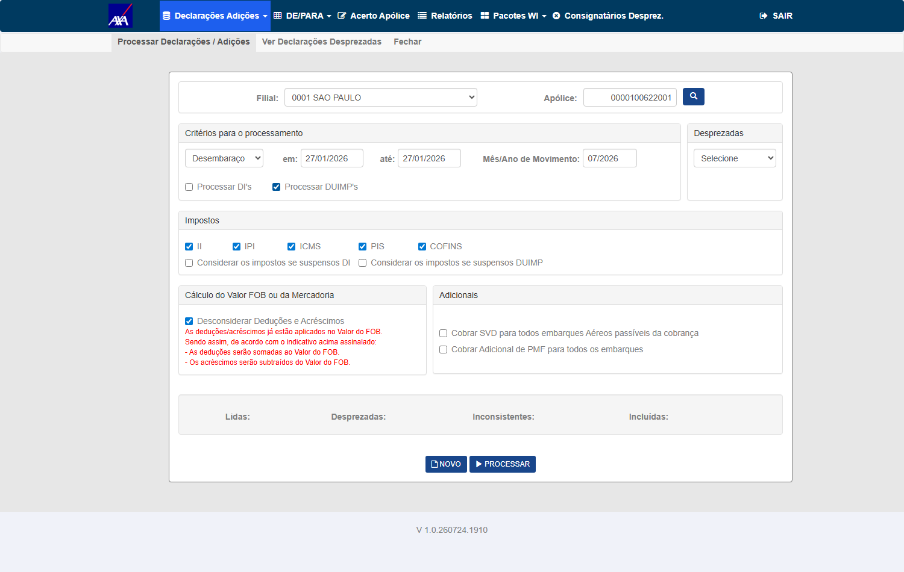
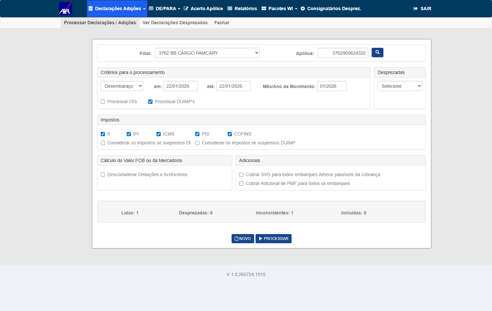

O WorkerDUIMP passará a gravar linhas agregadas (adição inteira, grupo de adições ou DUIMP inteira) além do item individual de hoje. Este PBI cria um serviço único e reutilizável que identifica o nível de agregação de cada linha (c_nvl_avb, q_itn_agp) e sabe expandir uma linha agregada nos itens/adições originais que ela representa (a partir de t_itn_org_agp).
Objetivo: fonte única e confiável para responder "quantos itens essa linha representa" e "quais são eles" — método ObterItensRepresentados(linha) — para que contadores (#7468), soma de valores (#7682), duplicidade (#7683), relatórios e consultas não reimplementem a lógica isoladamente. Este card é a base da família DUIMP agrupamento.
Seguradora/módulo/massa herdados do PBI #7582 (AXA HML, Interface WI/Siscomex → Declarações Adições).
O agrupamento é controlado pela flag AgrupamentoAverbacaoHabilitado (indicativo Ind_DuimpAgrupamentoAverbacao), desligada por padrão e ainda não disponível em HML. Enquanto off: 1 linha = 1 item, colunas novas em NULL.
c_nvl_avb 'D'/'A'/'I', q_itn_agp>1, t_itn_org_agp preenchido). Atualizado em 31/07/2026: a migration está aplicada e o WorkerDUIMP agregou 46 declarações entre 11:34 e 12:23 (28 multi-item, q_itn_agp de 2 a 89) — todas no nível 'D'. Com isso CT-DAG-005 e CT-DAG-007 saíram do bloqueio e foram aprovados. CT-DAG-002/003 (nível 'I') e CT-DAG-004 (nível 'A') seguem sem massa porque o Worker não gerou esses níveis; CT-DAG-006 depende de duas telas consumidoras observáveis.
smt-hom-citweb-axa passou de 45 para
389 linhas agregadas (c_nvl_avb preenchido), das quais 261 com
q_itn_agp ≥ 2 — chegando a 145 itens numa única linha — e todas as 389 com
t_itn_org_agp populado. Continuam 100% no nível 'D': zero 'I', zero 'A'. O que era uma
conclusão apoiada em 45 linhas agora se apoia em 389, o que torna o veredito "cenário inexistente" dos
CT-DAG-002/003/004 bem mais firme.
Ind_DuimpAgrupamentoAverbacao está 'S' também na base padrão, não só na alfa — eu
registrava a alfa como ambiente-alvo; (2) a alfa é que está zerada (1.284 linhas, todas NULL). O
ambiente com dado é o padrão, o inverso do que eu tinha anotado.O CT-DAG-006 foi encerrado por decisão de escopo de Produtos (Fabiola,
registrada pelo Diego em 05/08 11:26 — Opção A: serviço exposto + cobertura por teste unitário, sem exigir tela
consumidora nova). Placar final: 3 aprovados · 0 reprovados · 0 bloqueados · 1 encerrado por escopo ·
3 de cenário que não existe com dado real (níveis 'I'/'A', que nunca ocorreram
em nenhuma base).
A pergunta: “com as novas massas não foi incluído nenhuma para os cenários faltantes?” É pergunta de medição, não de opinião — e a resposta muda com o tempo, porque o Worker segue ingerindo. Remedi hoje, 10/08/2026 14:08, nas 36 bases HML online:
| Base | Total | NULL | Nível D | Nível A | Nível I |
|---|---|---|---|---|---|
| smt-hom-citweb-axa | 678 | 0 | 678 | 0 | 0 |
| smt-hom-citweb-axa-alfa | 1.284 | 1.284 | 0 | 0 | 0 |
| smt-hom-citweb-mitsui | 5.934 | 5.934 | 0 | 0 | 0 |
| smt-hom-citweb-mitsui-alfa | 5.934 | 5.934 | 0 | 0 | 0 |
| TOTAL | 13.830 | 13.152 | 678 | 0 | 0 |
Resposta: não. E agora a evidência é bem mais forte do que em 03/08.
O Worker não ficou parado — na AXA o nível 'D' saltou de 45 para 678 declarações
(e o legado NULL daquela base, que era 1.475, foi a zero). Ou seja: houve
massa nova em volume, o Worker processou, e continuou emitindo apenas o nível
'D'. Zero 'A', zero 'I', em todas as bases.
Isso fecha o assunto de forma diferente de “ainda não chegou”: em 03/08 dava para
argumentar que a carga era pequena. Com 15× mais declarações agregadas e ainda zero nos dois
níveis, “aguardar massa” não é um caminho que termina — o produto consolida sempre na DUIMP
inteira. Os CT-DAG-002/003/004 seguem sem cenário, e a decisão que sobra é de escopo
(reescrever para o nível 'D' ou marcar N/A), não de espera.
Nota de método: só 4 das 36 bases têm as colunas de
agrupamento — 23 têm a tabela sem as colunas e 9 não têm nem a tabela. O script confere
sys.columns antes de medir, porque o erro 42S22 se confunde com “não há nível nenhum”,
que é uma conclusão diferente e falsa.
Saída literal persistida em
evidencias/niveis/medicao_10-08.txt ·
script testes-automatizados/sprint-10-citweb/pbi-7802/ct_dag_niveis_agrupamento.py (reexecutável,
para a resposta nunca sair de memória).
Os CT-DAG-002, 003 e 004 estavam pendentes aguardando massa dos níveis 'I' e 'A'.
Varri todas as bases HML e a massa não existe — e não é atraso de carga, é o comportamento do Worker:
| Base | Total | NULL | Nível D | Nível A | Nível I |
|---|---|---|---|---|---|
| smt-hom-citweb-axa | 1.520 | 1.475 | 45 | 0 | 0 |
| smt-hom-citweb-axa-alfa | 1.284 | 1.284 | 0 | 0 | 0 |
| smt-hom-citweb-mitsui | 5.934 | 5.934 | 0 | 0 | 0 |
| smt-hom-citweb-mitsui-alfa | 5.934 | 5.934 | 0 | 0 | 0 |
| TOTAL | 14.672 | 14.627 | 45 | 0 | 0 |
O WorkerDUIMP consolida sempre na DUIMP inteira ('D'). Portanto CT-DAG-002, CT-DAG-003 e CT-DAG-004 não são "sem massa" — são cenários que o produto não gera. Continuar esperando massa não resolve; os CTs precisam ser reescritos para o nível 'D' ou marcados N/A.
Mesma causa em outros dois cards — é uma decisão de escopo, não três: #7682 (CT-DVM-003) e #7683 (CT-DUP-003/004/006). Somando os três cards, 8 CTs estão bloqueados pelo mesmo motivo.
Achado de cobertura de deploy: o schema de agrupamento
(c_nvl_avb, q_itn_agp, c_hsh_agp, d_agp) existe em apenas
4 de 38 bases HML — 23 têm a tabela sem as colunas e 11 não têm a tabela.
CT-DAG-006 (serviço único ObterItensRepresentados consumido pelas
telas) segue o único pendente de fato: não depende de nível 'I'/'A', e é verificável sobre as 45 linhas 'D' existentes.
origin/hml, HEAD 71a7c7554)
Em vez de manter "depende de telas consumidoras" como frase, fui contar quem chama o quê:
| Método do serviço | Quem consome em origin/hml |
|---|---|
ObterItensRepresentados (a expansão) | ninguém — só a própria classe e UnitTestCITWEB/ADO-7802/DuimpAgrupamentoDomainTest.cs |
ObterQuantidadeItens | InterfaceSTREITI/Controllers/DICargaController.cs:4984 — linhas.Sum(l => agrupamento.ObterQuantidadeItens(l)) |
O bloqueio do CT-DAG-006 é real e agora tem prova: não é falta de massa (há 389 linhas 'D') nem falta de acesso — não existe tela que exercite a expansão. Enquanto nenhum consumidor subir, só os unit tests cobrem esse caminho. A decisão (subir um consumidor ou aceitar a cobertura por unit test, declarando isso) é de dev/produto.
E há uma ponte com outros dois cards que vale registrar: o único consumidor deployado é a tela de Carga, no método ContarItensPorAgrupamentoOuJson, que alimenta os contadores do protocolo de carga DUIMP — o #7804 (hoje parado no Gate 2). Ou seja, quando o #7804 for executado, ele exercita ObterQuantidadeItens sobre as linhas agregadas — a parte observável que o CT-DAG-006 queria. A parte da expansão continua sem nada para observar.
⚠️ Corrige a anotação anterior de que o consumidor seria o DIProcessamentoController (contadores do #7803). Não é: lá os contadores incrementam +1 por linha em C#, sem passar por este serviço — conferido no mesmo ref.
In scope: serviço de interpretação/expansão da linha agregada — identificação do nível (c_nvl_avb NULL/'I'/'A'/'D'), quantidade (q_itn_agp), expansão dos itens originais via t_itn_org_agp, regra de NCM na linha 'D', e reutilização por telas consumidoras. Flag off (regressão) e flag on (agregado).
Out of scope: soma de valores monetários (PBI #7682); duplicidade (#7683); adaptação das telas/contadores em si (#7468) — aqui valida-se o serviço que elas consomem; geração das linhas agregadas (WorkerDUIMP).
Pré-requisitos:
https://axa-hml-faturamento.nsseg.com.br; usuário/senha HML AXA em .env (chaves HML_AXA_CITWEB_USER / HML_AXA_CITWEB_PASS) — nunca versionar credencial; módulo Interface WI/Siscomex → Declarações Adiçõesq_itn_agp>1 e t_itn_org_agp preenchido [via Worker]tb_itf_smx_dcl_pnd_dui para conferir níveis, q_itn_agp e o JSON de origemc_nvl_avb='I', q_itn_agp=1; indicativo ativo.CA: nível 'I' com q_itn_agp=1 é tratado como item individual — o serviço retorna exatamente 1 item (a própria linha), sem expandir.
ObterItensRepresentados retorna 1 itemq_itn_agp≥2 e t_itn_org_agp com os itens originais; indicativo ativo.CA: nível 'I' com q_itn_agp≥2 é agrupamento de itens — o serviço deve expandir retornando os N itens virtuais a partir do JSON t_itn_org_agp.
t_itn_org_agp (ex.: [{"adicao":"001","itens":[1,2]}])t_itn_org_agp.c_nvl_avb='A' (adição/grupo de adições); indicativo ativo.CA: nível 'A' representa uma adição inteira (ou grupo de adições) — o serviço expande os itens da(s) adição(ões) representada(s), conforme t_itn_org_agp.
c_nvl_avb='D' cobrindo adições com NCMs diferentes; indicativo ativo.CA: nível 'D' representa a DUIMP inteira — o serviço expande todos os itens; e o NCM exibido = primeiro NCM conforme a ordem do processo de DI (quando há NCMs diferentes entre adições).
q_itn_agp de
2 a 89), criando a massa deste CT. Cobertura atual: 46 de 423 declarações
(28 de 218 multi-item), contra 1 em 28/07.
| Verificação do CA | 26BR00000214583 | 26BR00000361284 |
|---|---|---|
adições na fonte WI (QT_ADICAO) |
5 | 22 |
| NCMs distintos entre adições (pré-condição) | 4 | 22 |
Σ QT_ITEM = q_itn_agp = itens no t_itn_org_agp |
30 = 30 = 30 ✓ | 47 = 47 = 47 ✓ |
| NCM da linha 'D' | 84439932 | 82130000 |
| NCM da adição 001 (primeiro na ordem DI) | 84439932 ✓ | 82130000 ✓ |
| menor NCM da declaração (hipótese alternativa) | 37079021 — não é o exibido | 39241000 — não é o exibido |
tb_itf_smx_dcl_pnd_err (adição 2, itens 15 e 17, entre outros). Ao reprocessá-la hoje
já agregada, o sistema registrou uma única linha de erro para a linha 'D' — ou
seja, a validação passou a tratar a linha agregada como uma unidade, que é o comportamento que o
serviço promete.
tb_itf_smx_dcl_pnd_err: "Não há provisória vigente para a data de saída, para
Apol: 3762900634322 Filial: 3762". Não é defeito de agregação — é lacuna de
massa, e não altera o veredito deste CT (validado na declaração que processou limpa). Fica
registrado porque criar uma provisória vigente nessa apólice libera 45 declarações agregadas de
uma vez, o que interessa ao #7682 e ao #7683.


testes-automatizados/sprint-11/pbi-7802/ct_dag_005_nivel_d_ncm.py — massa
descoberta dinamicamente por SQL (nenhuma apólice/DUIMP fixa).
A decisão responde exatamente a pergunta que este CT havia devolvido ao card. Nas palavras
dela: o compromisso é disponibilizar o serviço reutilizável (ObterItensRepresentados)
exposto às demais telas — não construir uma tela consumidora que liste os itens expandidos. O
"usuário" da história é o time do CITWEB (camada de processamento/relatórios/consultas), não o usuário
final. Aceita-se a cobertura da expansão por teste unitário
(UnitTestCITWEB/ADO-7802/DuimpAgrupamentoDomainTest.cs), e o CA é considerado atendido conforme
escrito.
Por que o badge diz "encerrado por escopo" e não "APROVADO": eu não executei este CT — não há o que executar depois da decisão. A evidência que sustenta o encerramento é (a) o serviço existe e está exposto e (b) o teste unitário existe — as duas coisas eu verifiquei no mapa de consumidores publicado neste plano —, mais (c) a decisão de escopo registrada no card. Chamar isso de "aprovado por execução" seria falso.
Isso também fecha a pergunta aberta logo abaixo (o relatório de não averbadas deve expandir os grupos?): a decisão diz que não há demanda de negócio atual para listar itens expandidos individualmente. Logo, o relatório listar 1 linha por registro pendente — inclusive para a DUIMP que representa 89 itens — está dentro do escopo aceito, e não é defeito. Se surgir a demanda de exibir os itens expandidos, é card novo.
Levantei as três telas que o CT cita: Processamento só produz contadores ao processar
(mutaria a massa pendente de que #7683/#7682 dependem — não acionei de propósito); Resultado das Cargas
mostra apenas DI= / Adi= por pacote, sem expansão de item; sobra o Relatório de
não Averbadas. Com uma tela só não há o que comparar.
O relatório DI's/DUIMP's não Averbadas lista 1 linha por registro pendente
e não expande os grupos agregados. Na apólice 3762900634322 (dona das 45 linhas 'D'):
| Grupo | Medição |
|---|---|
Agregadas com q_itn_agp = 1 | 18 DUIMPs → 1 linha cada ✓ (coincide trivialmente) |
Agregadas com q_itn_agp > 1 | 27 DUIMPs → 1 linha cada, não q_itn_agp linhas. A de 26BR00000875210 representa 89 itens e aparece como 1 linha |
| Controle — não agregadas | banco e relatório batem exatamente: 8=8 · 18=18 · 83=83 · 28=28 · 8=8 — é o que valida o método de comparação |
Isso pode ser correto: um relatório de pendências talvez deva listar os registros pendentes, e a linha agregada é um registro. A expansão importa para contagem/valor (CT-DAG-007 e #7682), não necessariamente para uma listagem de pendência. Pergunta para o dev/PO: o relatório de não averbadas deve refletir itens representados? Se sim, quem lê hoje entende 1 item pendente onde há 89. Não estou classificando como defeito sem essa definição.
Nota de método (duas leituras erradas antes de acertar):
o relatório grava a DUIMP com separadores — 26/BR0000005315-6/0001/00001 (DUIMP + adição + item).
Buscar 26BR literal devolve zero e levaria a concluir que as DUIMPs agregadas não aparecem no
relatório. Uma tentativa anterior também casou chaves indevidamente e acusou 27 "divergências" que não existiam
naquele formato. O grupo de controle acima é o que garante que a terceira leitura está certa.
Evidência: evidencias/CT-DAG-006/DINaoAverbadas-FRED-03082026-124221.xlsx
(58.110 bytes · aba "RELAÇÃO DE PENDENTES" · A1:G1597 · 258 linhas desta apólice).
CA: existe um serviço/método reutilizável (ObterItensRepresentados(linha)) exposto para as demais telas — a expansão deve vir da mesma fonte, sem cada tela reimplementar a lógica.
DuimpAgrupamentoDomain tem 6 métodos públicos. Os dois modos do protocolo consomem ObterNivel (2 usos) e ObterRotuloNivel (8 usos) — é esse compartilhamento que o #7804 confirmou em tela, com o rótulo dinâmico batendo nos dois modos.ADO-7802/DuimpAgrupamentoDomainTest invoca _sut.ObterItensRepresentados(...) em 6 cenários (flag off, nível null, I com qtd 1, I com qtd 2, A, D). Isso importa porque no card irmão #7803 o teste equivalente é tautológico — define um helper local que retorna 1 e assere que retorna 1. Aqui não: o teste do #7802 exercita produção.origin/hml e origin/main[CT-DAG-006] quem consome cada metodo publico do DuimpAgrupamentoDomain
ObterNivel 2 uso(s) no DICargaController
ObterRotuloNivel 8 uso(s) no DICargaController
ObterQuantidadeItens 0 uso(s) no DICargaController <- ZERO consumidor de producao
EhAgrupamentoItens 0 uso(s) no DICargaController <- ZERO consumidor de producao
ObterNcmExibicao 0 uso(s) no DICargaController <- ZERO consumidor de producao
ObterItensRepresentados 0 uso(s) no DICargaController <- ZERO consumidor de producao
origin/hml: referencias a ObterItensRepresentados fora de teste = 1 (so a definicao)
origin/main: referencias a ObterItensRepresentados fora de teste = 0 (so a definicao)
-> o CT-DAG-006 cobra 'servico unico reutilizavel CONSUMIDO PELAS TELAS'.
Parte disso acontece: ObterNivel + ObterRotuloNivel sao compartilhados pelos DOIS
modos do protocolo (e o #7804 confirmou o rotulo dinamico nos dois, em tela).
Mas o metodo que o CT nomeia, e outros 3 publicos, NAO tem consumidor: a expansao
de itens foi entregue e testada em unidade, e nao esta ligada a nenhuma tela.
Justo com o dev: o teste do #7802 (ADO-7802/DuimpAgrupamentoDomainTest) chama o
metodo REAL — diferente do teste do #7803. O problema aqui e wiring, nao teste.
#----------------------------------------------------------------------------
# CT-CTD-003: APROVADO por prova estrutural (delta constante, linha descartada,
# 1 ponto de estrangulamento, 0 linhas somando item). Declarado: nao houve
# observacao do contador ao vivo — nao existe pacote pendente agregado.
# CT-DAG-006: PARCIAL — o servico compartilhado existe e as telas consomem nivel+rotulo,
# mas ObterItensRepresentados (e mais 3 metodos) tem ZERO consumidor.
ObterItensRepresentados sem consumidor” como defeito. Ao ler o bloco de 05/08 que já estava aqui, vi que essa é exatamente a situação que Produtos aceitou: expor o serviço, sem tela consumidora, com cobertura unitária. Reverter isso seria desfazer decisão de produto com base numa medição que a própria decisão previu. O mapa fica como corroboração, não como reprovação. Nota de escopo, sem veredito: além do método nomeado, ObterQuantidadeItens, EhAgrupamentoItens e ObterNcmExibicao também estão sem consumidor — se algum dia entrar a demanda de exibir itens expandidos, já existe base pronta para ela.Consistência transversal: o total de itens expandidos pelo serviço deve bater com SUM(COALESCE(q_itn_agp,1)) da DUIMP — alinhado com contadores (#7468) e soma de valores (#7682), sem duplicar nem perder itens.
SUM(COALESCE(q_itn_agp,1)) da DUIMPQT_ITEM das adições no JSON da fonte WI, o q_itn_agp gravado
pelo Worker e a contagem de itens no mapa t_itn_org_agp.
| Critério de aceite | CT(s) |
|---|---|
| c_nvl_avb NULL → 1 linha = 1 item (atual) | CT-DAG-001 |
| 'I' q_itn_agp=1 → item individual | CT-DAG-002 |
| 'I' q_itn_agp≥2 → agrupamento, expande de t_itn_org_agp | CT-DAG-003 |
| 'A' → adição inteira / grupo de adições | CT-DAG-004 |
| 'D' → DUIMP inteira; NCM = primeiro NCM (ordem DI) | CT-DAG-005 |
| Serviço reutilizável ObterItensRepresentados p/ demais telas | CT-DAG-006 |
| Testado com flag ligada e desligada | CT-DAG-001 (OFF) + 002–007 (ON) |